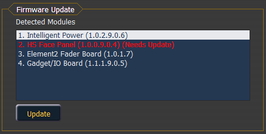

The firmware update window will display any detected devices that use firmware and may require an update. Devices that need to be updated will display in red.
When a device is selected, the {Update} button will display in yellow if the device can be updated using this window. This includes devices that do not currently need to be updated. If the button is grayed out, the device can not be updated using this window.
